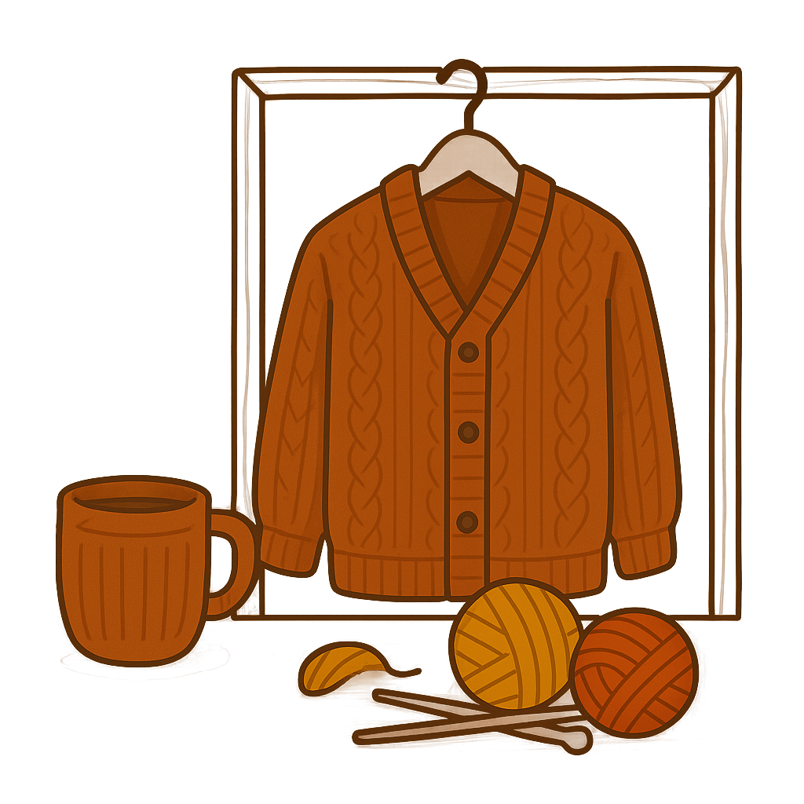

خانهی فندوقی، جاییست که نخها به قصه تبدیل میشوند و بافتها، گرمای عشق را در خود میتنند. اینجا دنیایی از ظرافت، سادگی و احساس در تار و پود هر لباس بافتهشده جریان دارد. ما باور داریم لباسهای دستساز، چیزی فراتر از پوشاک هستند؛ آنها حامل خاطرات، احساسات و لحظاتیاند که با دستهای پرمهر ساخته میشوند.
اگر دنبال هدیهای خاص، شالگردنی با نام عزیزتان یا ژاکتی با رنگ دلخواهتان هستید، جای درستی آمدهاید. در فندوقی، هر سفارش با دقت شنیده میشود، طراحی میشود و سپس نخ به نخ، با عشق بافته میشود. ما به انتخاب شما احترام میگذاریم و سعی میکنیم هر محصول را دقیقاً مطابق سلیقه و نیازتان ارائه دهیم.
نخهایی که استفاده میکنیم، ضدحساسیت، نرم و بادواماند. رنگها با دقت انتخاب میشوند تا حالوهوای فصول و روحیات شما را بهخوبی بازتاب دهند. طراحیها نیز یا برگرفته از طرحهای کلاسیک و خاطرهانگیزند، یا بهصورت اختصاصی توسط تیم ما خلق میشوند تا خاص و متفاوت باشند.
بستهبندیها هم بخشی از ماجراست. ما باور داریم اولین نگاه، مهمترین تأثیر را میگذارد؛ بنابراین محصولات فندوقی با بستهبندیهای زیبا و دوستداشتنی ارسال میشوند، تا وقتی در خانهتان بازشان میکنید، لبخند بزنید.
فندوقی برای تمام کسانیست که میخواهند متفاوت باشند، برای کسانی که به اصالت، هنر دست و حس خوب اهمیت میدهند. این خانه، تنها یک فروشگاه نیست؛ سرزمینیست برای آرامش، خلاقیت و پیوند دوباره با لحظههایی که ساده بودند اما عمیق.
با ما همراه شوید، قصهی نخ و مهر را زندگی کنید و به دنیایی از گرمای بافتنیها خوشآمد بگویید. اینجا، همهچیز از دل آمده و به دل مینشیند.